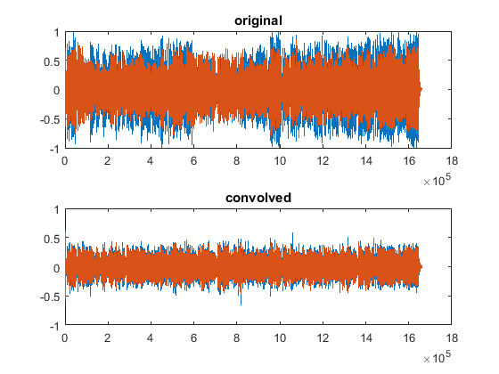
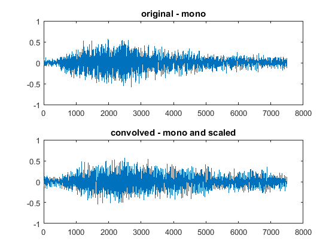
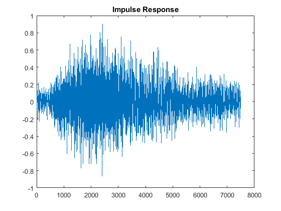
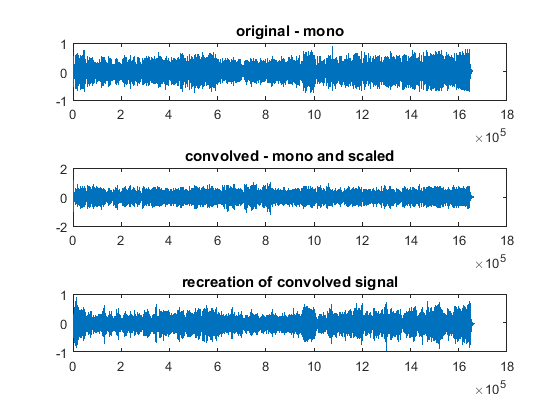

Contents
Read in the audio files
original = 'original.wav'; shower = 'shower.wav'; [yOrig, fs] = audioread(original); [yConv, fs] = audioread(shower); % y orig is slightly longer, truncate y1 = yOrig(:,1); y2 = yOrig(:,2); y1 = y1(1:1661510); y2 = y2(1:1661510); combi = [y1 y2]; % graph both side by side figure(1); subplot(2,1,1) plot(combi) title('original') subplot(2,1,2) plot(yConv) title('convolved') % two channel audio - need to be merged % since the two channels in the re-recording are different from % the two channels in the original file, it would be best % to merge the channels % simple merge based on channel averages monoOrig = (combi(:,1)+combi(:,2))/2; monoConv = (yConv(:,1)+yConv(:,2))/2;
Filter the Audio
%first we choose a smaller part to analyze % soundsc(monoConv(7500:15000), 16000); % soundsc(monoOrig(7500:15000),16000); % Should be second "Fight! % Denoise the sounds using a lowpass filter in order to % Not have unnecessary noise when finding the Impulse Response N = 100; % FIR filter order Fp = 8e3; % 12 kHz passband-edge frequency Fs = 16e3; % 16 kHz sampling frequency Ap = 0.01; % 0.01 decibel passband ripple Ast = 80; % 80db stopband attenuation Rp = (10^(Ap/20) - 1)/(10^(Ap/20) + 1); Rst = 10^(-Ast/20); % obtain maximum deviations for passband and stopband ripple % now design the filter and return it f = dsp.FIRFilter('Numerator',firceqrip(N,Fp/(Fs/2),[Rp Rst],'passedge')); % appy the filter monoOrigFilter = step(f, monoOrig); monoConvFilter = step(f, monoConv);
Find the Impulse Respose
% scale convolution to be the same volume as the original fightOrig = monoOrigFilter(7500:15000); fightConv = monoConvFilter(7500:15000); valOne = max(fightOrig); valTwo = max(fightConv); scaleFactor = valOne/valTwo; fightConv = fightConv * scaleFactor; figure(2); subplot(2,1,1) plot(fightOrig) title('original - mono') subplot(2,1,2) plot(fightConv) title('convolved - mono and scaled') % Do the deconvolution [q,r] = deconv(fightConv, fightOrig); % THIS WAS REMOVED AS IT DID NOT WORK % In order to spread the impulse response evenly % We use an anti-causal zero phase filter % tenptaverage = ones(1,10)/10; % r = filtfilt(tenptaverage,1,r); figure(4) plot(r) title('Impulse Response') % Now create a version of the original that was % Convolved with the newfound Impulse Response % This will be smaller, so scale it up. output = conv(monoOrigFilter, r) + q; scaleTwo = max(monoOrigFilter)/max(output); output = output*scaleTwo; figure(3); subplot(3,1,1) plot(monoOrigFilter) title('original - mono') subplot(3,1,2) plot(monoConvFilter*scaleFactor) title('convolved - mono and scaled') subplot(3,1,3) plot(output) title('recreation of convolved signal')  
Final thoughts and conclusions
% The final signal is nowhere near the sound recorded from the shower % This is due to a variety of reasons, including the low signal to % noise ratio of the signal I decided to use, as well as % sound reproduction discrepencies I did not account for in the % speakers, and the characteristics of the microphone that I did not % account for. % However, the final output does reproduce many features of a shwoer, % namely the large amount of reverberation and the sort of % 'dampening' % In the future, I hope to use what I've learned here in order to % make a website where users can upload sound files and download % those same sound files with a shower sound convolution.